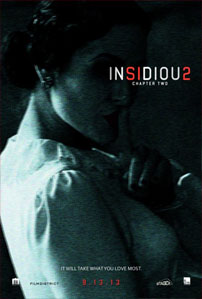
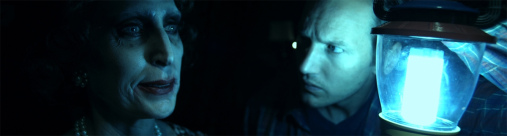

Review Insidious 2
Minggu, 1 Desember 2013

Dengan keberhasilan luar biasa yang didapatkan oleh Insidious (2011), baik secara kritikal maupun komersial – dimana film horor tersebut berhasil meraih pendapatan lebih dari US$97 juta dari biaya produksi yang hanya berjumlah US$1.5 juta, jelas tidak mengherankan untuk melihat Jason Blum, Oren Peli, James Wan dan Leigh Whannell kembali bekerjasama dan berusaha mengulang kembali kesuksesan tersebut. Hey! It’s Hollywood! Seperti yang dapat ditangkap dari judul film ini, Insidious: Chapter 2 adalah lanjutan langsung dari Insidious yang mencoba untuk lebih mendalami berbagai misteri yang terjadi pada karakter-karakter utamanya. Namun, sayangnya, daripada memberikan presentasi yang lebih kuat dari jalan cerita yang telah terbangun apik di seri awalnya, Wan dan Whannell justru terperangkap dengan formula penceritaan yang kembali berulang dan membuat Insidious: Chapter 2 kehilangan seluruh kejutan serta kesegaran daya tarik ceritanya.
Pengisahan Insidious: Chapter 2 dimulai dengan kepindahan pasangan suami istri, Josh (Patrick Wilson) dan Renai Lambert (Rose Byrne), beserta ketiga anak mereka ke rumah ibu Josh, Lorraine Lambert (Barbara Hershey), guna mencoba untuk melupakan berbagai tragedi yang telah terjadi pada mereka beberapa waktu yang lalu. Pun begitu, kematian paranormal, Elise Ranier (Lin Shaye), ketika mencoba untuk menolong keluarga Lambert tidak luput dari perhatian hukum yang menyebabkan Josh kini berada di bawah pengawasan pihak kepolisian. Walau kadang masih merasa berada di bawah bayang-bayang sosok supranatural yang mencoba untuk mengganggu keluarga mereka namun Josh dan Renai berusaha sekuat mungkin untuk menatap ke depan dan tidak lagi mempedulikan permasalahan tersebut.
Sial, dunia supranatural sepertinya belum siap untuk melepaskan keluarga Lambert. Secara perlahan, Josh, Renai dan Lorraine mulai merasakan adanya gangguan aneh yang kembali menghantui keseharian mereka. Josh sendiri terus menekankan pada Renai bahwa ia harus tetap berlaku sewajar mungkin demi kenyamanan anak-anak mereka namun Lorraine, yang mulai tidak tahan dengan segala gangguan tersebut, kemudian menghubungi dua rekan kerja Elise, Specs (Leigh Whannell) dan Tucker (Angus Sampson), untuk mencari tahu bagaimana cara melenyapkan berbagai gangguan tersebut untuk selamanya. Setelah melalui beberapa penyelidikan, Specs dan Tucker akhirnya menemukan sebuah tragedi yang menjadi akar penyebab gangguan supranatural yang terus mengikuti keluarga Lambert dan berusaha untuk merebut kehidupan mereka.
James Wan adalah seorang sutradara yang sangat berbakat dalam mengelola kisah-kisah horor. Lewat Insidious – danThe Conjuring yang juga meraih sukses besar ketika dirilis beberapa waktu yang lalu, Wan berhasil membuktikan bahwa dirinya memiliki kemampuan luar biasa dalam mengubah plot penceritaan yang sebenarnya begitu sederhana dan familiar menjadi sebuah presentasi horor yang begitu mencekam. Wan benar-benar tahu bahwa penggunaan atmosfer horor yang tepat adalah kunci utama dalam keberhasilan untuk menakut-nakuti penonton. Walaupun minim, Insidious: Chapter 2 masih menggunakan formula yang sama: atmosfer horor nan gloomy yang disajikan di beberapa sudut penceritaan. Dan, pada kebanyakan bagian, penggunaan atmosfer gloomy tersebut mampu bekerja dengan efektif.

Di saat yang bersamaan, Wan dan Whannell gagal untuk memberikan pengembangan mendalam terhadap kisah sederhana yang mereka terapkan di seri pertama film. Daripada berusaha untuk menambah intrik-intrik yang lebih kuat di dalam jalan penceritaan, Wan dan Whannell hanya mendaur ulang kisah lama Insidious dan membumbuinya dengan tambahan konflik untuk menambah kesan kompleksitas cerita. Hasilnya? Jalan cerita Insidious: Chapter 2 lebih sering meninggalkan penontonnya pada alam antah berantah yang akan membuat mereka kesulitan dalam mencerna jalan penceritaan film. Wan dan Whannell juga terlihat lebih sering bertumpu pada jump scares dan adegan-adegan penuh darah untuk menghasilkan kadar kengerian. Kadang bekerja, namun lebih sering terasa begitu predictable dan melelahkan daripada menyenangkan. Yang juga patut diberi perhatian adalah penambahan porsi komedi dalam jalan cerita Insidious: Chapter 2. Yeahhh… not really working, Wan!
Seperti pada seri sebelumnya, Insidious: Chapter 2 masih didukung dengan penampilan-penampilan dari Patrick Wilson, Rose Byrne, Barbara Hershey, Lin Shaye, Leigh Whannell dan Angus Sampson. Kesemuanya masih tampil dalam kualitas penampilan akting yang tidak mengecewakan. Karakter yang diperankan Hershey malah mendapatkan porsi cerita yang lebih besar di film ini – dan berhasil dieksekusinya dengan baik. Kebalikannya, kini giliran karakter yang diperankan oleh Byrne yang harus duduk manis tanpa adanya adegan-adegan esensial yang harus ditampilkan. Malah, ada atau tidak adanya karakter Renai Lambert dalam Insidious: Chapter 2 sepertinya tidak akan berpengaruh banyak pada jalan cerita film ini. Kualitas teknikal Insidious: Chapter 2 tampil tidak mengecewakan, dengan Joseph Bishara lagi-lagi mampu memberikan tata musik yang berpengaruh kuat pada komposisi emosional cerita – meskipun tidak seistimewa apa yang dilakukannya pada The Conjuring.
Masih ingat dengan Saw (2004) yang juga dibidani James Wan dan Leigh Whannell? Film yang membangkitkan genre torture porn di Hollywood tersebut berlanjut hingga seri ketujuh namun terus mengalami penurunan kualitas seiring dengan penambahan jumlah serinya – Wan dan Whannell tidak lagi menangani franchise tersebut semenjak seri ketiga.Insidious: Chapter 2, sayangnya, memiliki potensi yang kuat untuk mengikuti pola kualitas franchise Saw: serinya akan terus berlanjut – berdasarkan ending yang diberikan Wan dan Whannell di film ini – namun kualitasnya akan semakin…well… menyengsarakan – in a bad way. Untuk sebuah lanjutan dari kisah yang tergarap cukup rapi, Insidious: Chapter 2 jelas hadir dengan kapasitas yang begitu dangkal. Mungkin Wan dan Whannell tidak memiliki cukup waktu untuk menggarap jalan cerita Insidious: Chapter 2. Mungkin Wan dan Whannell hanya ingin easy money dari kesuksesan luar biasa Insidious. Namun tetap saja… Insidious: Chapter 2 adalah sebuah presentasi yang cukup mengecewakan dari sisi manapun Anda mencoba untuk melihatnya.